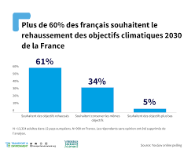

Chers les monsieurs et les madames
Le changement climatique est important, mais nous pouvons tous faire une différence en prenant de petits gestes au quotidien. Voici quelques conseils pour aider à protéger notre belle planète :
Les changements climatiques désignent les variations à long terme de la température et des modèles météorologiques. Il peut s’agir de variations naturelles, dues par exemple à celles du cycle solaire ou à des eruptions volcaniques massives. Cependant, depuis les années 1800, les activités humaines constituent la cause principale des changements climatiques, essentiellement en raison de la combustion de combustibles fossiles comme le charbon, le pétrole et le gaz. La combustion de combustibles fossiles génère des émissions de gaz à effet de serre qui agissent comme une couverture autour de la Terre, emprisonnant la chaleur du soleil et entraînant une hausse des températures. Les émissions de dioxyde de carbone et de méthane, notamment, sont à l’origine des changements climatiques. Elles résultent par exemple de l’utilisation de carburants pour alimenter les véhicules ou du charbon pour chauffer un bâtiment. Le défrichement des terres et des forêts peut également entraîner la libération de dioxyde de carbone. L'agriculture et les moteurs à combustion constituent une source importante d’émissions de méthane. Les secteurs de l’énergie, de l’industrie, des transports et de la construction ainsi que de l’agriculture et d’autres utilisations des terres figurent parmi les principaux émetteurs.
Ensemble, nous pouvons créer un monde plus vert et plus heureux pour tous!
Les scientifiques ont montré que l'être humain est responsable (PDF en anglais) en très grande proportion du réchauffement climatique dans le monde au cours des 200 dernières années. Les activités humaines, telles que celles mentionnées ci-dessus, sont la cause des émissions de gaz à effet de serre qui réchauffent le globe plus vite que jamais auparavant au cours de 2000 dernières années. En conséquence, la température à la surface du globe est actuellement supérieure de 1,1 °C par rapport à la température enregistrée dans les années 1800, avant la révolution industrielle. La dernière décennie (2011-2020) a été la plus chaude jamais enregistrée et chacune des décennies précédentes a été plus chaude qu'aucune autre décennie depuis 1850. De nombreuses personnes pensent que les changements climatiques se traduisent principalement par des températures plus élevées. Pourtant, la hausse des températures n’est que le début du problème. Comme la Terre est un système où tout est lié, un changement à tel ou tel endroit peut avoir des répercussions partout ailleurs. Actuellement, les conséquences des changements climatiques sont notamment les suivantes : sécheresses intenses, pénuries d’eau, graves incendies, élévation du niveau de la mer, inondations, fonte des glaces polaires, tempêtes catastrophiques et déclin de la biodiversité.
